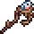

Terraria
Terraria est un jeu vidéo développé par Re-Logic, il s'agit d'un Monde ouvert en 2D type action-aventure dans lequel le joueur contrôle un personnage, visuellement customisable tout comme le monde généré. Le mode solo et le mode multijoueur sont tout deux supportés. La façon de jouer a pas mal de similitude au jeu connu Minecraft et il a été partiellement inspiré par celui-ci.
Pourquoi Terraria?
Terraria est un Monde ouvert, il n'y a pas d'objectif précis, ce qui veut dire que les joueurs ont le temps de décider eux-mêmes quoi faire et quand le jeu est "terminé". Le but le plus populaire et le plus fréquent est de rendre le personnage le plus puissant possible et battre les boss les plus durs du jeu.
Le Jeu
Le Hardmode est une phase du jeu bien plus difficile que le mode initial.
Un monde fait une conversion permanente vers le Hardmode après avoir battu le Mur de chair.
Présentation du jeu par Jackplay Plus :
Les NPC's
Un PNJ, pour Personnage Non-Joueur, est un personnage amical qui fournit des services aux joueurs. La plupart des PNJs sont des marchands : ils vendent des objets en échange de pièces, et peuvent également racheter vos objets contre de l'argent. Certains PNJs possèdent d'autres compétences.


Les Boss
Les boss sont des ennemis imposants et agressifs qui offrent un défi substantiel aux joueurs. Vaincre un boss est une étape primordiale dans l'avancement de votre partie. Ils ont chacun leur propre manière d'être invoqué. La plupart des boss et mini-boss peuvent passer à travers tous les types de blocs
-

Roi Slime
-

Œil de Cthulhu
-

Reine des abeilles
-

Cerveau de Cthulhu
-

Seigneur de la lune
Les Objets
Les objets sont des entités qui font partie des composants les plus fondamentaux de Terraria. Le joueur peut interagir avec la plupart des objets en les utilisant, en les consommant ou en les plaçant.
-
Épée en Cuivre
-
Épée en Or
-

Gladius
-
Épée en Palladium
-

Zénith
-

Sceptre pinson
-
Ailes d'Ange
-
Bottes Terra
-
Grappin Lunaire
-
Pioche Astrale
Nous contacter
Pour toutes questions ou idées, merci de nous contacter via ce formulaire.